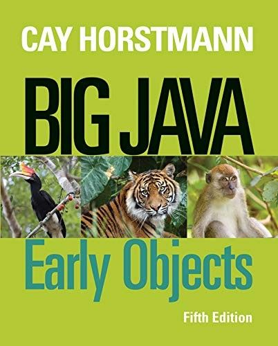
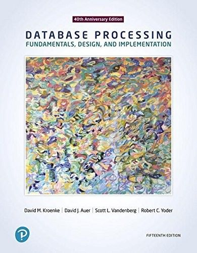
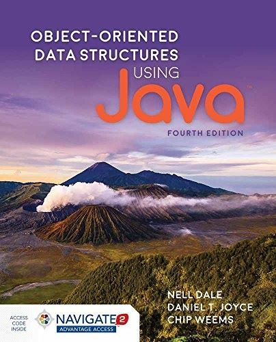
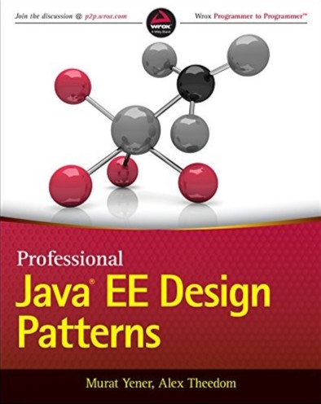

Courses
-

Introduction to Computer Programming
Level: 1
Course Code: CST8116
Description: Possessing the fundamentals of logic, problem-solving and programming language structure provides a solid foundation for further study in the field. Students develop introductory knowledge of computer programming with emphasis on problem analysis and design, using algorithms, pseudocode, flowcharts, UML Class Diagrams and testing, with the Java programming language used as a means to implement problem solution designs. Through an introduction to the Java programming language students use sequential structures, selection structures, repetition structures, variables, constants, methods, constructors, one-dimensional arrays, object-oriented programming, classes, objects, abstraction, encapsulation, inputs, outputs, coding conventions and documentation. Theory is reinforced with application by means of practical laboratory assessments.
-

Database Systems
Level: 2
Course Code: CST2355
Description: Database systems can automate data processing tasks as well as tie into the security of information technology systems. Students acquire practical experience using market-leading object-relational database management systems like Oracle and MySQL. Students obtain hands-on experience with advanced engineering modeling tools along with SQL, SQL scripts and programming with Oracle's PL/SQL blocks. Database concepts covered include advanced SQL, case structures, rollup and cube operations, metadata manipulation, data storage and retrieval, security and transaction control and data warehousing
-

Object Oriented Programming with Design Patterns
Level: 2
Course Code: CST8288
Description: Design patterns are programming architecture solutions to common challenges faced in software implementation. Students implement best practices of object-oriented program development with software design patterns. Students also apply Unified Modeling Language (UML) program specifications in the Java programming language. SQL through JDBC technology is used embedded for developing and using "data access objects". Course topics include refactoring, domain modelling, JDBC and multithreaded servlet programming. Students develop proficiency in creating, testing, debugging, deploying and documenting programs and servlets through practical application.
-

Enterprise Application Programming
Level: 3
Course Code: CST8277
Description: Enterprise applications connect clients to services that are based on data stored in database management systems. With a focus on the IT Enterprise, students examine the application enterprise environment using and extending the technologies learned in previous courses. Students examine the commonly used enterprise systems development technologies such as Java/Jakarta Enterprise Edition, cloud computing, security and the corporate database repository.